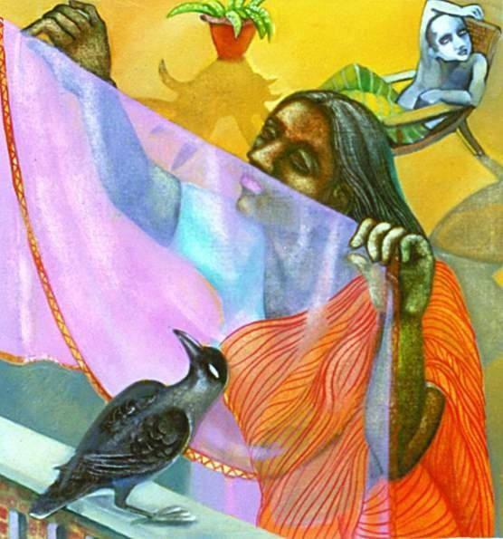
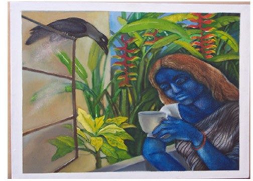
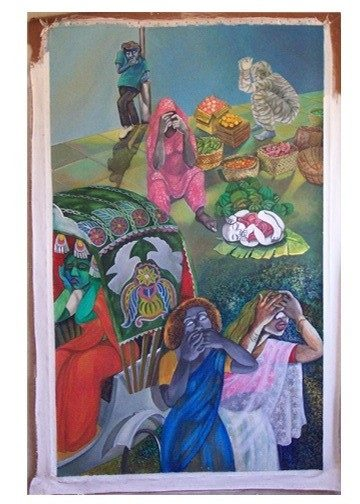
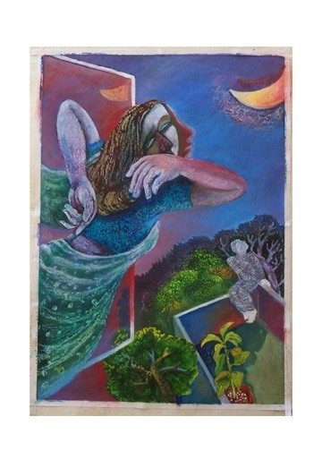
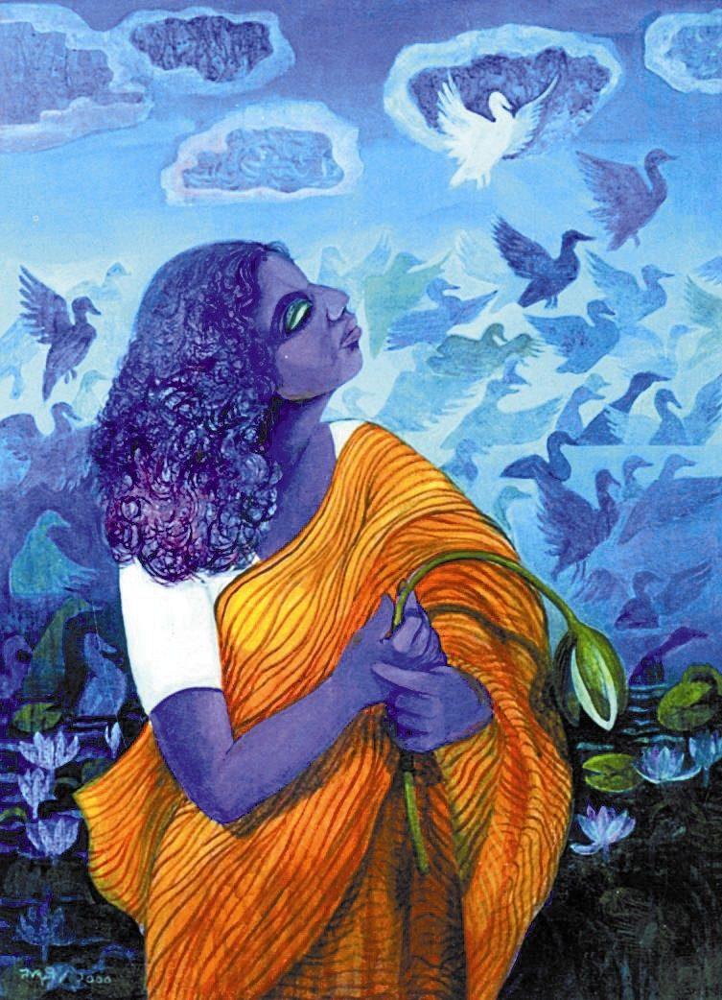
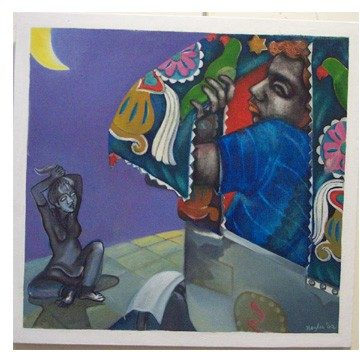

Critic’s Corner · May 2004
“I Want to Paint Pictures for Non-artists”: Nazlee’s Art

"I want to paint pictures for non-artists," Nazlee told me when I first visited her studio to look at her paintings. These words mad ea profound impression on me, shaped my entire view of her paintings and I began to grapple with the multiplicity of meanings of her work. As I began to hold together both her words and the visual impact of her paintings I became more and more painfully aware of how simple her words were; yet how dead(ly) accurate.

What does she strive toward in the process of meaning making in her pictures? In each one of her paintings we have the relentless figuration of the woman and of women. The representation of woman becomes the crucial enabling poetic visual device here. The pictures tell stories, stories that tell truths of the everyday, the truths of containment, silence, outrage and freedom. They are stories that wish to fly out the window but somehow cannot. They challenge the reader's concept of order, harmony and distance through a spatial arrangement where the everyday and the mythic are brought together in an uneasy balance. It is a doubling process of myth and the everyday. There is little harmony even as she plays with the tones of harmony and wholeness.

The politics of representation is the most crucial aspect in Nazlee's work. She continues in painting after painting to conjure up the figure of the woman, deromanticised, only to be placed alongside the romantic. In this she achieves not only an effect of disjuncture but also makes room for questions on how one may construct the woman. In other words, she enables a concept of representation of woman through a multiple and painful play of expressive and figurative narration. The popular is very much alive in her work. But there are crucial disagreements with the tradition of the popular; we see a clash of the romantic, the melodramatic, the abstract and the starkly 'realistic' in her work. The everyday becomes a 'gestural' event, a 'gestus' that has to be taken together with the 'frozen' moments of 'tradition.' They deny stability to any fixed category, residing somewhere between the spectacular and the gestural, the popular and the melodramatic, and the abstract and the representational.

I have come full circle, back to what Nazlee first told me. As a feminist and a non-artist (in the painterly sense), I negotiate with her pictures to formulate answers for my own work and thinking in other areas of political work. The semiotic possibilities of Nazlee's work throw up questions of great importance to all of us engaged in struggling with the politics of representation. They force oneself to struggle with the questions: 'what is art?' and 'who exactly is an artist.' Does art refer to itself or to something outside of it? It is neither and both at the same time. Nazlee's work paves way for an aesthetic that is neither popular nor populist; but deflects off from both in an engaging manner. She will keep pushing the edges of this aesthetic further and further as she experiments with her figures of bondage and of freedoms and continues to negotiate with the multiple meanings of what it means to be a woman/women in contemporary society.

Sumathy,
Department of English
University of Peradeniya
Peradeniya
Sri Lanka
Paintings: Nazlee Laila Mansur, first exhibited at Lalit Kala Academy, New Delhi, 2002.
Photos: Usha Titikchchu.

Nazlee, Sumathy and Usha are visual artist/writer/photographer who met each other when they were in residence at Sanskriti Kendra, New Delhi under Sanskriti's South Asia programme, Bond beyond Borders, in 2002.
Please do not reproduce Nazlee's art without prior permission from
Nazlee.